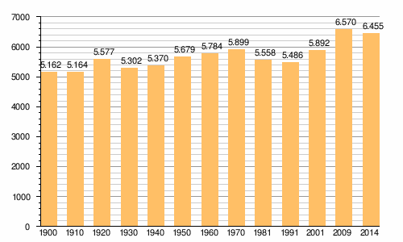

Concello situado ó suroeste da provincia de Pontevedra. Pertence á comarca do Baixo Miño, situándose á beira da desembocadura do río Miño. Limita polo sur coa Guarda, polo norte con Oia e polo nordeste con Tomiño. O seu xentilicio é rosaleiro.
Segundo o IGE, no 2014 tiña unha poboación de 6.455 habitantes.

| Oia | A Guardia | Index |